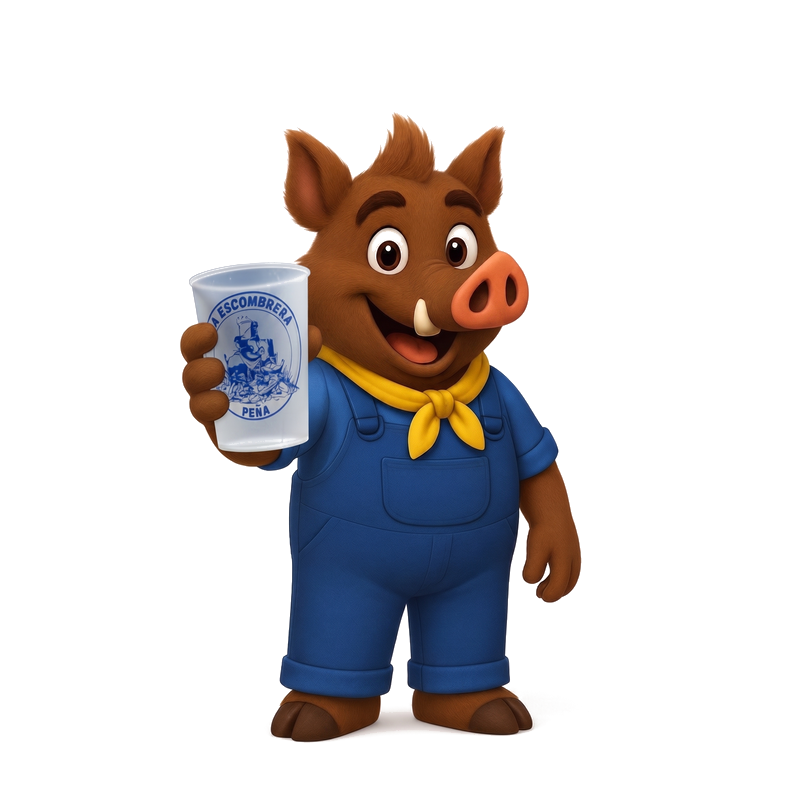
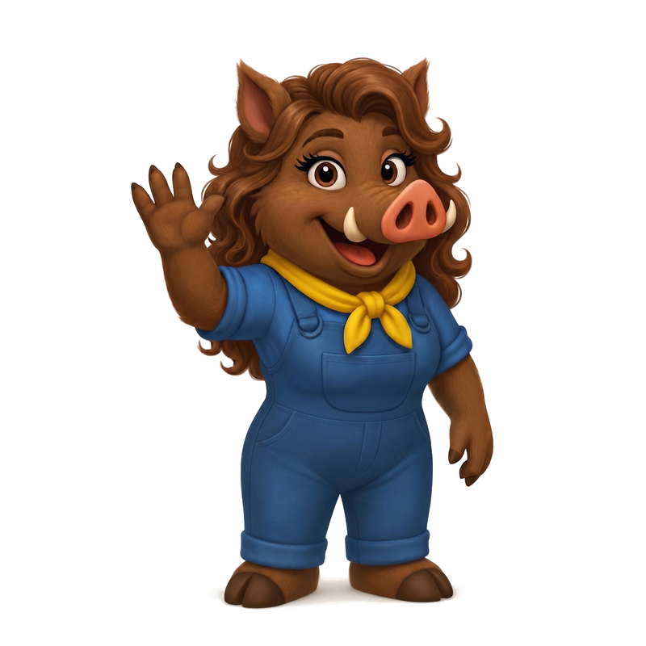
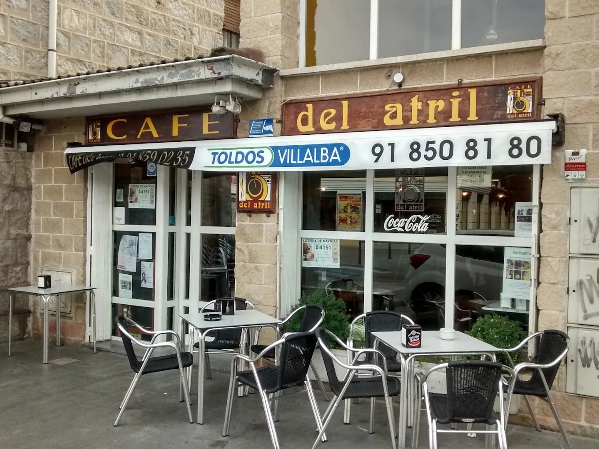
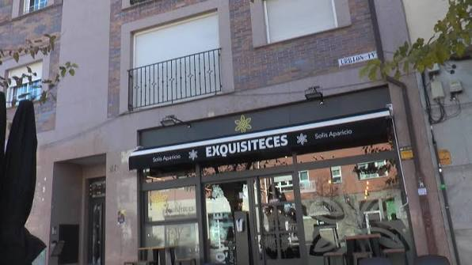

Peña La Escombrera
Unión · Tradición · Fiesta · Cultura · Risas
📍 Torrelodones, Madrid · Desde 2025
Síguenos en InstagramQuiénes somos
Más que una peña, una familia con pañuelo amarillo y ganas de liarla (bien)
La Peña La Escombrera nació el 25 de julio de 2025 en Torrelodones, Madrid. Desde entonces, somos ~52 socios unidos por la amistad, la familia y las ganas de hacer pueblo.
Nuestro presidente, Juan Manuel Fernández, capitanea esta tropa de entusiastas que organiza desde concursos de parejas imposibles hasta carreras populares, pasando por romerías, fallas y torneos de baloncesto.
Nuestro espíritu se resume en cinco palabras: unión, tradición, fiesta, cultura y risas. Y si lo dudas, pregúntale a nuestras mascotas. 🐗
Descargar Estatutos (PDF)
Toñín
Nuestro jabato oficial. Su nombre viene de San Antonio de Padua, patrón de la construcción — porque si hay escombros, hay un Toñín cerca.

Toñina
La otra mitad del dúo. Si Toñín monta la fiesta, Toñina la organiza. Juntos representan al jabalí, animal emblema de Torrelodones.
Eventos
De las fallas a la cabalgata, pasando por la feria de abril. Aquí nunca nos aburrimos.
Jabalí News
Hablan de nosotros. Las últimas noticias y apariciones de La Escombrera en los medios.
El embrión de la Peña ‘La Escombrera’ en Torrelodones: sentimiento de pertenencia
Descubre cómo nació nuestra gran familia y el sentimiento que nos une a nuestro querido pueblo.
Leer noticia →La Peña La Escombrera celebró su primera romería de San Antonio
Un día inolvidable acompañando a San Antonio en nuestra primera romería como peña oficial.
Leer noticia →‘La Escombrera’ prende la mecha de las primeras fallas en Torrelodones
Haciendo historia: trajimos el espíritu fallero a la sierra y la liamos pardísima.
Leer noticia →Concursos Navidad de Torrelodones ya tienen ganadores
Nuestro talento navideño reconocido en los certámenes municipales. ¡Alegría y jolgorio!
Leer noticia →Entregados los premios a los ganadores de los concursos de Navidad
La gala de entrega donde la peña recogió sus galardones con el espíritu escombrero por todo lo alto.
Leer noticia →Nuestras sedes
Donde se cuecen los planes y se brindan las victorias

El Atril
C. Jesusa Lara, 37, 28250 Torrelodones, Madrid
Nuestra sede social de toda la vida. El cuartel general donde empezó todo.

Exquisiteces
C. Real, 28, Loc 3, 28250 Torrelodones, Madrid
Nuestra segunda casa. Aquí también se conspira entre cafés y cañas.
Colaboradores
Gracias a quienes hacen posible cada evento y cada sonrisa
🏆 MVP — Most Valuable Parrandero
El salón de la fama de los que más la lían en cada evento
🎮 Jabalí Run
Esquiva los escombros y corre con Toñín por Torrelodones
¡Únete a la manada!
¿Quieres ser parte de La Escombrera? Escríbenos por Instagram y te contamos cómo.
Somos una peña abierta a todo aquel que comparta nuestras ganas de hacer pueblo, pasarlo bien y echar una mano cuando haga falta. Da igual tu edad, tu barrio o si prefieres la caña o el mosto — aquí hay sitio para todos. 🐗
@laescombrera_torrelodones